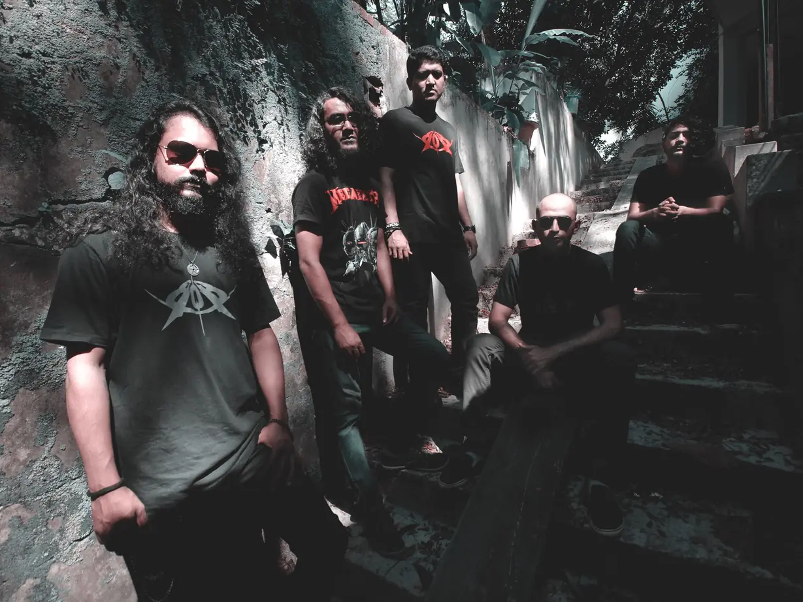

Current band
Bay of Bengal
Lead guitar, 2019 – present
In 2019 Nipu joined Bay of Bengal, an experimental rock and metal band from Chittagong and one of the country’s most popular. With them he played the Joy Bangla Concert, the biggest stage in Bangladesh.